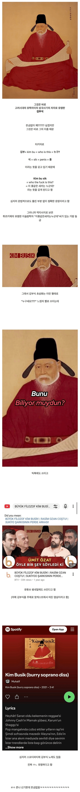

의외로 터키에서 유명하다는 한국 사람.jpg
댓글
먼 동양의 학자, "누군데 씨발" 을 모시겠습니다
쟤네가 저걸 어떻게 알았나 싶은데
뭐 송가이 제국의 말단 관리 같은 씹마이너한 역사라도 이름이 "누군데 씨발"이면 알게되지ㅋㅋ
살라딘의 휘하에 종군하며 예루살렘 회복하고 의외로 사서까지 편찬한 저명한 율법학자 듣 보잡
콩고에 보지 보지아나라는 가수가 있음 https://en.wikipedia.org/wiki/Bozi_Boziana
이런느낌이겠지 아마
와 보지가 두 개!
성이보지야 이름이보지야
앞보지 뒷보지 ㄷㄷ
역지사지로 튀르키예의 축구선수 귀라이 부랄이 있습니다
칭기즈칸의 아버지 예수게이
주딱아! 갤럼들은 자기가 지은 죄도 죄인지 모른다이기!
아버지를 주딱아 ㅋㅋㅋㅋㅋㅋ
예수게이같은 느낌이려나?
그러네

야사 중에서 이 사람이 정지상 귀신한테 부랄이 터져 죽었다는 이야기가 있음
이 좆같은 새끼는 누군데 / 김부식 / 그래서 누구냐고
보지냐 골키퍼 유명한거랑 비슷한가
알자지라 방송국 같은 거구나
어떻게 배우 이름이 방귀
삼국사기의 저자 "이 좆같은새끼는누군데" 씨를 모셔보겠습니다.